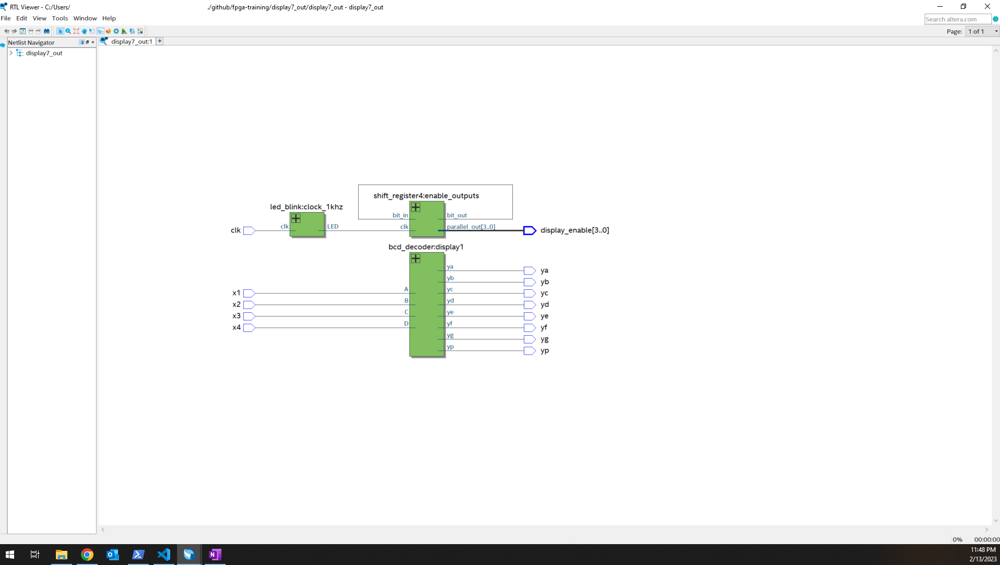

MEDIA


FPGA Self learning
ABOUT THE PROJECT
Since two years ago I started my own path for learning logic design using FPGA. I bougth a Cyclone IV development board and I'm practicing with Verilog HDL. I consider as a great challenge, using only books and some examples, mixing with C basis that I've learnt at school. A part of this history can be found in my GitHub repo, which could be useful for another people interested in self-learning like me
MEDIA